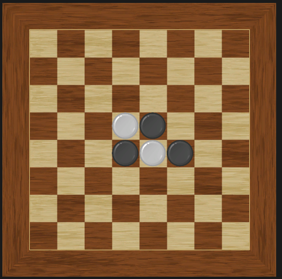

나만의 로직, 동적 라이브러리 활용 및 기능 추가

오델로 : 돌을 놓으려면 한 방향으로 "다른" 색깔의 돌이 있어야 돌을 놓을 수 있고, 규칙이 적용됩니다.
오델로에서 가장 중요한 규칙은
1. 돌을 놓을 때 현재 색깔과 "반대" 되는 색깔이 옆 칸에 존재하는가?
2. 현재 색깔과 "같은" 색깔의 돌이 한 칸 이상 띄워져 있는가?
3. 중간에 돌이 연속으로 이어져 있는가?
이렇게 3가지입니다.
1번은 오목을 만들 때 DLL 파일에 기능을 구현하여 따로 만들 필요가 없었습니다.
2번은 1번 함수를 사용하여 받은 방향에 다른 0이 아닌 다른 값이 있는가? -> 있다면 True를 반환,없다면 False반환 하는 함수를 구현.
DLL파일에 추가 후
DLL 파일을 이용하여 게임을 다시 제작하였습니다.
이 게임을 처음 만들 때는 유니티 이해도 미숙, 코드의 잘못된 설계 등등 여러 가지 이유로 2달 정도 걸렸지만
현재 게임을 다시 만들 때 걸린 시간은 3일 정도가 걸렸습니다.